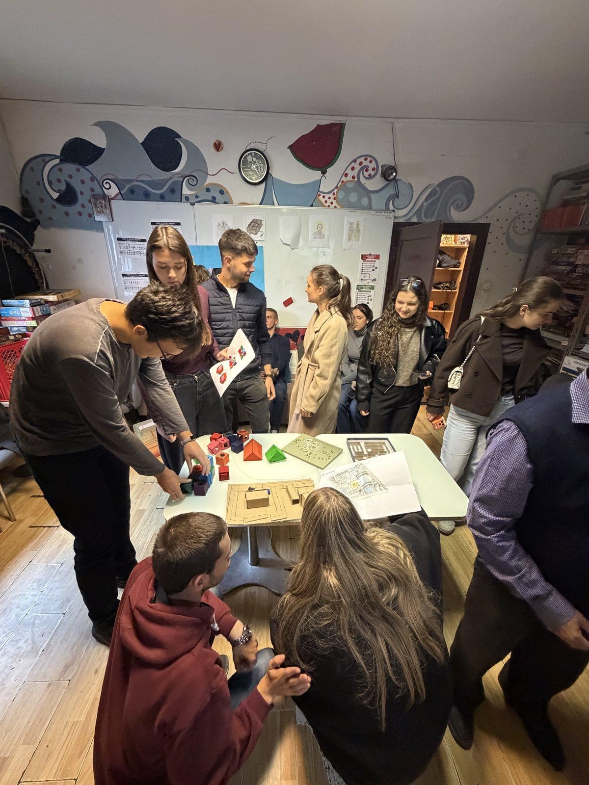
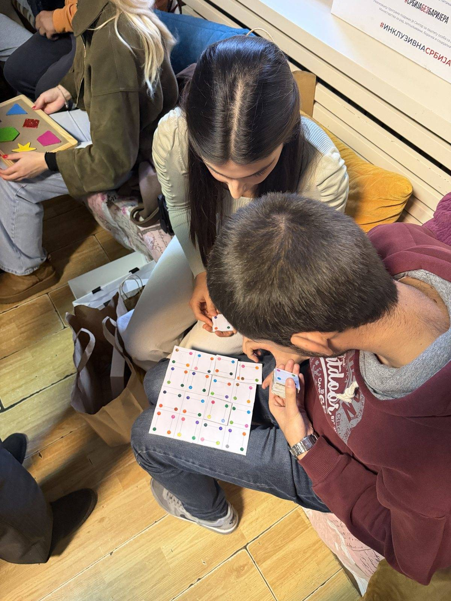

Radovi i primeri / Čas 5
Bez naziva
Marija Bajić114/24
Čas 5
3 prikaza rada · Gradivo časa


U rukama korisnika · 30.10.2026.
6 kadrova sa posete udruženju · cela poseta ↗
Drveni ram daje čvrst oslonac u krilu, a oblici na kanapima se ne osipaju
ViđenoNakon što je stajao na prednjem stolu (kadrovi 04, 85–87 i 05), drveni ram sa razapetim kanapima i nanizanim svetlucavim geometrijskim oblicima u šestom kadru sa Drive-a prelazi u krilo korisnice na klupi: čvrst drveni okvir stoji stabilno bez stola, a nanizani oblici ostaju na kanapima pri svakom nagibu.
Sledeća probaFiksirati ili ojačati poprečne letvice na poleđini rama i dodati taktilne graničnike duž kanapa kako bi svaka traka imala jasan početak i kraj pri pomeranju oblika u krilu.




